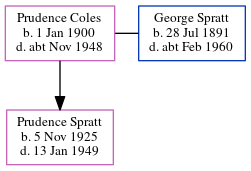

Prudence L Spratt (née Coles) 1900 - c1948
[ Home ] | [ Calendar ] | [ Surnames Index ] | [ Errors ] | [ Family History ]Prudence Coles, the wife of George Dale Spratt (the great-uncle of Nigel Horne), was born on 1 Jan 19001 and married George (a road sweeper with whom she had 1 child, Prudence M) in Thanet, Kent, England around Nov 19243. On 29 Sept 1939, she was living at 4 St John's Road, Margate, Kent1.
She died c. Nov 1948 in Thanet2.
Children
- Prudence M was born on 5 Nov 1925
Citations
- 1939 Register - Findmypast (was the wife of the head of the household)
- England & Wales deaths 1837-2007 - Findmypast
- England & Wales, Marriage Index: 1916-2005 Online publication - Provo, UT, USA: The Generations Network, Inc., 2009.Original data - General Register Office. England and Wales Civil Registration Indexes. London, England: General Register Office. © Crown copyright. Published by permission of the Cont
Media
England & Wales deaths 1837-2007 - BMD/D/1948/4/AZ/000929/094
England & Wales marriages 1837-2008 - BMD/M/1924/4/AZ/000218/130
Family Tree
Map
Generated by ged2site. Last updated on Jul 3, 2024
Known Issues
Date of birth is known, but not place
No records of living with anyone